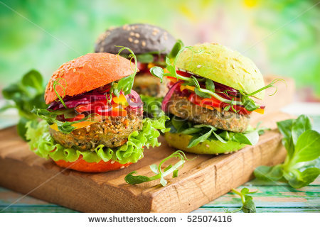
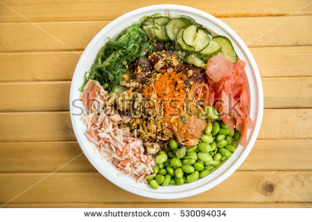
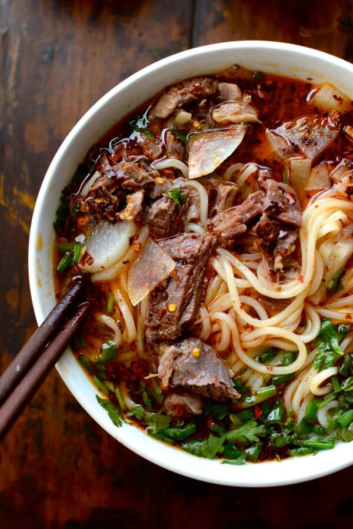

Beef Stroganoff or Beef Stroganov is a Russian dish of sautéed pieces of beef served in a sauce with smetana. From its origins in mid-19th-century Russia, it has become popular around the world, with considerable variation from the original recipe
Beef Stroganoff or Beef Stroganov is a Russian dish of sautéed pieces of beef served in a sauce with smetana. From its origins in mid-19th-century Russia, it has become popular around the world, with considerable variation from the original recipe
Chicken teriyaki or teriyaki chicken is a popular Japanese chicken dish topped with a savory and sweet teriyaki sauce. This recipe yields the best chicken teriyaki ever, tried and tested by hundreds of home cooks.
"Quick, Easy and Delicious-Homemade pizza crust and tomato sauce has never been easier-and this recipe for pepperoni pizza produces a delicious classic!"
Avocado toast is a type of open sandwich made with mashed avocado and salt, pepper, and citrus juice on toast. Many other ingredients may be used, such as poached eggs, salmon, strawberries, garlic, tomatoes, capers, onions and feta.
How to Make a Cheese Omelette. Cheese and eggs are a classic combination when it comes to making omelettes. You can eat them not just for breakfast, but for lunch and dinner as well. You can even make your omelette even more filling by.

health environmentally friendly dish popular among the vegetarian and vegan community

Orginating from japan, the poke bowl is a mixed rice bowl filled with sashimi, fish eggs, and much more!

Traditional dish originating from the island nation of Taiwan. The warm broth and the stewed beef paired along with the elsticity of the noodles make for a great meal